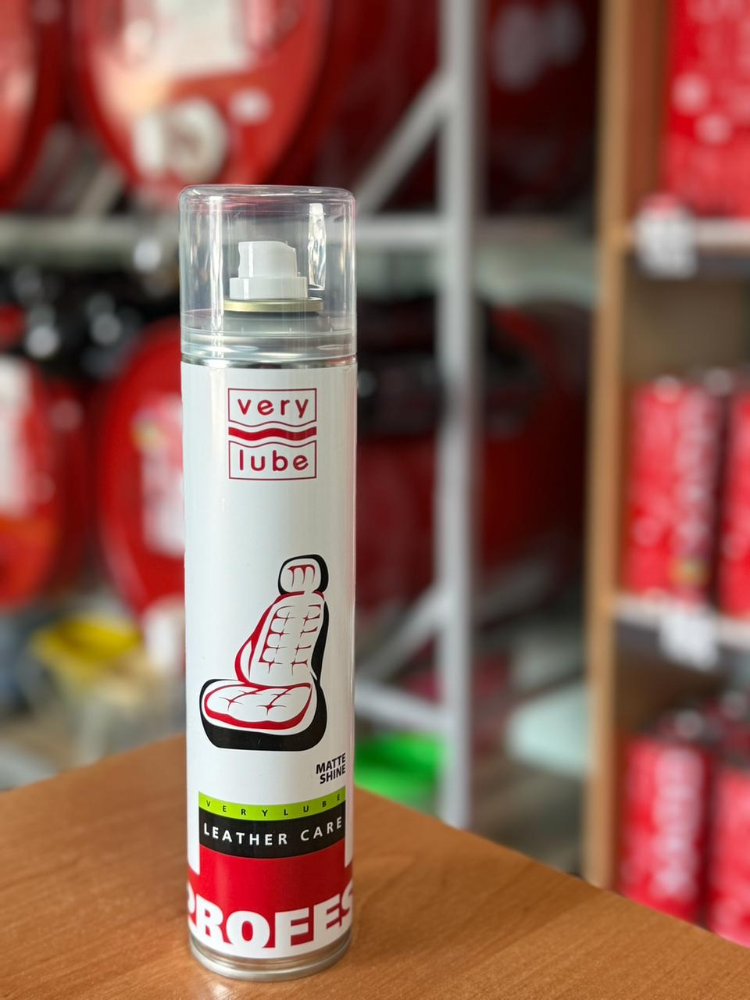

Об’єм: 300 мл
Високоякісний спрей VERYLUBE для делікатного очищення та відновлення шкіряних елементів інтер'єру авто. Ідеально підходить як для натуральної, так і для штучної екошкіри (сидіння, карти дверей, елементи приладової панелі). Засіб не лише прибирає забруднення, але й глибоко живить матеріал, роблячи його еластичним та захищаючи від пересихання.
Якщо ви хочете дізнатись про наявність товару, отримати консультацію або поставити будь-які питання щодо продукції XADO — ми завжди готові допомогти.
Телефон для зв’язку: +38 (050) 585-07-26
Ми допоможемо обрати саме те, що потрібно вашому автомобілю.
Звертайтеся, ми цінуємо кожного клієнта!